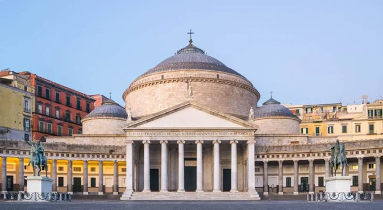
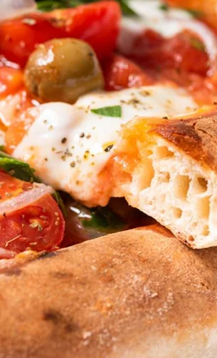
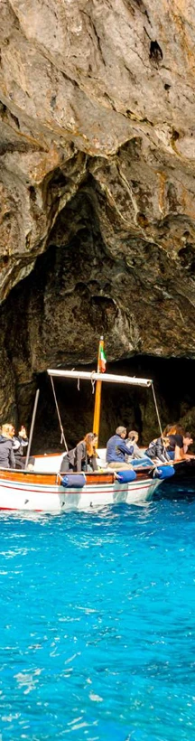
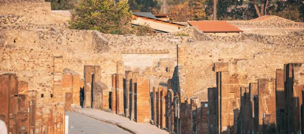
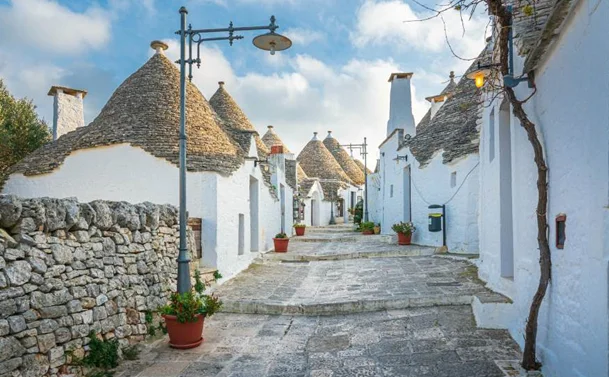
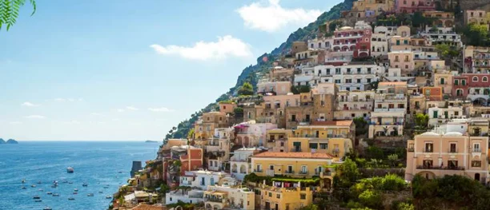
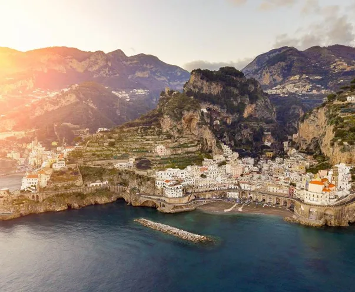
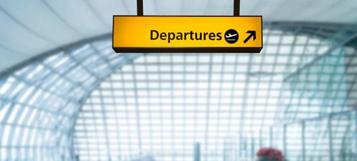

Tur Haqqında
Marşrut
| Saat | Fəaliyyət |
|---|---|
| 01:00 | Qrupun Romada (Fiumiçino Hava Limanı) qarşılanması |
| 03:00 | Avtobusla Neapola yola düşmə (~260 km) |
| 09:00 | Səhər yeməyi |
| 14:00 | Neapol üzrə piyada şəhər turu |
| 16:00 | Şəhərdə sərbəst vaxt |
| 20:00 | Otelə qayıdış |

Günün təəssüratları
Otelə gec yerləşməyin ən gözəl tərəfi odur ki, ertəsi səhər oyanaraq şəhərlə birlikdə tam bir gün yaşamaq mümkündür. Belə bir macərada yol yoldaşınız Neapol olduqda isə bunun dəyəri daha da artır. Neapol hər cür səyahətçi üçün rahat və cəlbedici bir şəhərdir. Heç nə etmədən Avropa materikində yerləşən yeganə aktiv vulkanın bənzərsiz mənzərəsindən zövq almaq istəyirsiniz? Buyurun. Bütün günü ekskursiyalarda keçirməyə üstünlük verirsiniz? Bunun üçün hazır proqram var. Turistlərin adətən görmədiyi gizli küçələri özünüz kəşf etməyi sevirsiniz? Neapolda "həyatı olduğu kimi" görmək tamamilə mümkündür. Bir sözlə, yolda rahatlıqla yeyə biləcəyiniz pizza a portafoglio (qatlanmış "pulqabı pizzası") götürün və macəra axtarışına çıxın.

| Saat | Fəaliyyət |
|---|---|
| 08:00 | Səhər yeməyi |
| 09:00 | Sərbəst gün + əlavə ekskursiya |
| 20:00 | Otelə qayıdış |
Günün təəssüratları
Dediyimiz kimi, günəş şəhəri (Neapolda günəş ildə təxminən 250 gün parlayır) hər növ səyahətçi üçün son dərəcə rahat bir şəhərdir. Əgər uzun piyada gəzintilərini sevirsinizsə, Neapol bu baxımdan da sizi məyus etməyəcək: şəhərdə azmaq demək olar ki, mümkün deyil, çünki demək olar ki, hər nöqtədən Sant-Elmo qalası görünür. Başqa bölgələrdə olduqca isti keçən avqust ayı belə burada gəzintilər üçün əlverişlidir — dənizdən daim yüngül və sərinləşdirici cənub mehi əsir.

Mavi (Lazur) Qrot — suyun sanki içəridən güclü projektorlarla işıqlandırıldığı təbii mağaradır və bu möhtəşəm məkanı hələ imperator Tiberi yüksək qiymətləndirmişdi. Lakin adada heyran qalmağa dəyər təkcə bu görməli yer deyil. Burada Neapol şəhərinə və Vezuv vulkanına açılan mənzərələri, kanat yolu ilə qalxmaq mümkün olan Solaro dağını, Müqəddəs Mariya skitini, Barbarossa qalasını, sonsuz alış-veriş imkanlarını və İtaliyanın hündürlüyünə görə ikinci mayakını da qeyd etmək olar. Bəli, bu adanın adı həqiqətən də kapri şalvarı ilə əlaqəlidir 🙂
48 EUR / böyüklər · 36 EUR / uşaqlar| Saat | Fəaliyyət |
|---|---|
| 08:00 | Səhər yeməyi |
| 09:00 | Sərbəst gün + əlavə ekskursiya |
| 17:00 | Avtobusla Bariyə yola düşmə (~260 km) |
| 22:00 | Oteldə qeydiyyat |
Günün təəssüratları
Neapol hər növ səyahətçi üçün rahat bir şəhərdir. Heç nə etmədən Avropa materikində yerləşən yeganə aktiv vulkanın möhtəşəm mənzərəsindən zövq almaq istəyirsiniz? Buyurun. Bütün günü ekskursiyalarda keçirməyə üstünlük verirsiniz? Bunun üçün hazır proqram var. Əgər daha çoxunu görmək istəyirsinizsə, hər zaman əlavə ekskursiyalara qoşulmaq imkanınız var.

Pompeyin qurucuları püskürmə təhlükəsinə baxmayaraq niyə vulkanın ətəyində məskunlaşmışdılar? Əslində kiçik bir şəhər olan Pompey necə oldu ki, Roma imperiyasının tərkibinə daxil olmamışdan əvvəl onun ordusuna 9 il müqavimət göstərə bildi? Eramızın 80-ci ilində fast-food necə görünürdü? Bu ekskursiya zamanı bütün bu suallara cavab tapacaq, həmçinin şəhər və onun sakinləri haqqında daha çox maraqlı fakt öyrənəcəksiniz. "Həyat sizə limon verirsə, onlardan turist cəlb etmək üçün istifadə edin" — yəqin ki, Sorrento sakinləri məhz belə düşünüblər və şəhərlərini Avropanın ən cəlbedici kurortlarından birinə çeviriblər.
Pompey: 22 EUR / böyüklər · 2 EUR / uşaqlar Sorrento: 30 EUR / böyüklər · 20 EUR / uşaqlar| Saat | Fəaliyyət |
|---|---|
| 08:00 | Səhər yeməyi |
| 10:00 | Bari şəhəri üzrə piyada ekskursiyası |
| 12:00 | Sərbəst vaxt + əlavə ekskursiya |
| 18:00 | Avtobusla tranzit otelə (Salerno, ~240 km) yola düşmə |
| 22:00 | Oteldə qeydiyyat |
Günün təəssüratları
Siz Müqəddəs Nikolay şəhəri, balıqçı məhəllələri və canlı küçələri ilə tanınan tarixi Bari şəhəri ilə tanış olacaqsınız. Qədim şəhər boyunca gəzinti sizə əsl Cənubi İtaliyanın ab-havasını hiss etdirməyə imkan verəcək. Günün ikinci yarısında istirahət, alış-veriş və ya əlavə ekskursiyalar üçün sərbəst vaxt nəzərdə tutulub. Günün sonunda isə sizi Salerno istiqamətində mənzərəli bir yol və artıq sizi gözləyən rahat tranzit oteli qarşılayacaq.

Alberobello sanki başqa bir reallığa atılmış addımdır. Burada adi küçələr və evlər yoxdur — yalnız köhnə nağılların səhifələrindən çıxmış kimi görünən, daş damlı, ağ trulli evləri var. Bura sadəcə gözəl bir məkan deyil — o, Apuliyanın zeytun ətri, şərabı, sakitliyi və günəşi ilə özünəməxsus ritmdə yaşayır. Alberobello elə bir şəhərdir ki, burada dayanmaq, dərindən nəfəs almaq və hər guşəsini ömür boyu xatırlamaq istəyirsən.
28 EUR / böyüklər · 12 EUR / uşaqlar| Saat | Fəaliyyət |
|---|---|
| 08:00 | Səhər yeməyi |
| 09:00 | Salernoda sərbəst gün və ya Amalfiyə əlavə ekskursiya |
| 18:00 | Avtobusla Bariyə yola düşmə (~260 km) |
| 22:00 | Oteldə qeydiyyat |
Günün təəssüratları
Bu gün dəniz sahilində yerləşən, sahil gəzinti zolağı, rahat kafeləri və Cənubi İtaliyaya xas sakit atmosferi ilə seçilən mənzərəli Salerno şəhərində gün keçirmək imkanınız olacaq. Daha çox görmək istəyənlər üçün isə Amalfiyə əlavə ekskursiya təşkil olunur.


Qayaların qoynunda ucalan, evlərin damlarında bağların salındığı, küçələrin yerini isə pilləkənlərin tutduğu bir şəhəri təsəvvür edin. Bir vaxtlar müstəqil Amalfi Respublikasının mərkəzi olmuş bu şəhər UNESCO-nun Dünya İrs Siyahısına daxil edilmiş Amalfi sahili ərazisində yerləşir. Bir sözlə, Amalfi mütləq ziyarət edilməli şəhərlərdən biridir. Hətta bütün görməli yerləri bir kənara qoysaq belə, daim dəyişən Tirren dənizinin mənzərəsi naminə belə buraya gəlməyə dəyər.
48 EUR / böyüklər · 36 EUR / uşaqlar| Saat | Fəaliyyət |
|---|---|
| 08:00 | Səhər yeməyi |
| 10:00 | Roma şəhəri üzrə piyada ekskursiyası |
| 12:00 | Sərbəst vaxt |
| 21:00 | Otelə qayıdış |
Günün təəssüratları
Bunu bir dəfə yaşamaq kifayətdir ki, Romanın əhatəsində içilən bir fincan səhər espressosunun insana dünyanın istənilən başqa şəhərində içilən qəhvədən tamamilə fərqli enerji verdiyinə əmin olasınız. Əgər səhər yeməyindən sonra Roma ilə birlikdə ictimai nəqliyyatda qısa bir yol getsəniz, onun səslərini dinləsəniz və qoxularını hiss etsəniz, həmin günün əbəs yerə keçirilmədiyini anlayacaqsınız. Təxminən üç min illik tarixə malik belə bir yol yoldaşının piyada ekskursiya zamanı sizə nələr danışacağını isə yalnız təsəvvür etmək olar 😉
| Saat | Fəaliyyət |
|---|---|
| 09:00 | Səhər yeməyi |
| 10:00 | Roma hava limanına transfer (Fiumiçino Hava Limanı) |

Yerləşmə
| Şəhər | Otel | Gecə sayı | Tarix |
|---|---|---|---|
| Neapol | Hotel Futura Centro Congressi 4★ | 2 gecə | 16.08 – 18.08.2026 |
| Bari | Hotel Residence Federiciano 4★ | 1 gecə | 18.08 – 19.08.2026 |
| Benevento | Hotel Lemi 4★ | 1 gecə | 19.08 – 20.08.2026 |
| Pomezia | Hotel Selene Pomezia 4★ | 2 gecə | 20.08 – 22.08.2026 |
Bütün otellərə səhər yeməyi daxildir.
Şərtlər
Qiymətlər
| Ekskursiya | Böyüklər | Uşaqlar |
|---|---|---|
| Kapri adasına səyahət | 48 EUR | 36 EUR |
| Pompey Arxeoloji Parkına giriş | 22 EUR | 2 EUR |
| Amalfiyə səyahət | 48 EUR | 36 EUR |
| Alberobelloya səyahət | 28 EUR | 12 EUR |
| Sorrentoya səyahət | 30 EUR | 20 EUR |
Əlavə ekskursiyaların ödənişi tur zamanı yalnız nağd şəkildə avro ilə həyata keçirilir.
Rezervasiya
4 yaşdan kiçik uşaqlar tura qəbul edilmir.
Ödəmə şərtləri: Rezervasiya tarixindən 3 gün ərzində 50 EUR zəmanət haqqı ödənilməlidir. Turun dəyərinin 100%-i turun başlamasına ən geci 14 gün qalmış ödənilməlidir.
⚠️ Ləğv şərtləri: Zəmanət haqqı (50 EUR) heç bir halda geri qaytarılmır. Turun başlamasına 14 gündən az qalmış ləğv edilərsə, turun dəyərinin 100%-i cərimə kimi tutulur.
Əlavə məlumatlar: Bu tur İtaliya vizası tələb edir. Uşaqlar üçün yaş həddi: 4–11.99 yaş. Sərbəst vaxtlarda avtobus müşayiəti təmin edilmir. Turoperator fövqəladə hallarda ekskursiyaların sırasını dəyişdirə bilər. City tax və checkpoint ödənişi tur zamanı nağd avro ilə ödənilir.